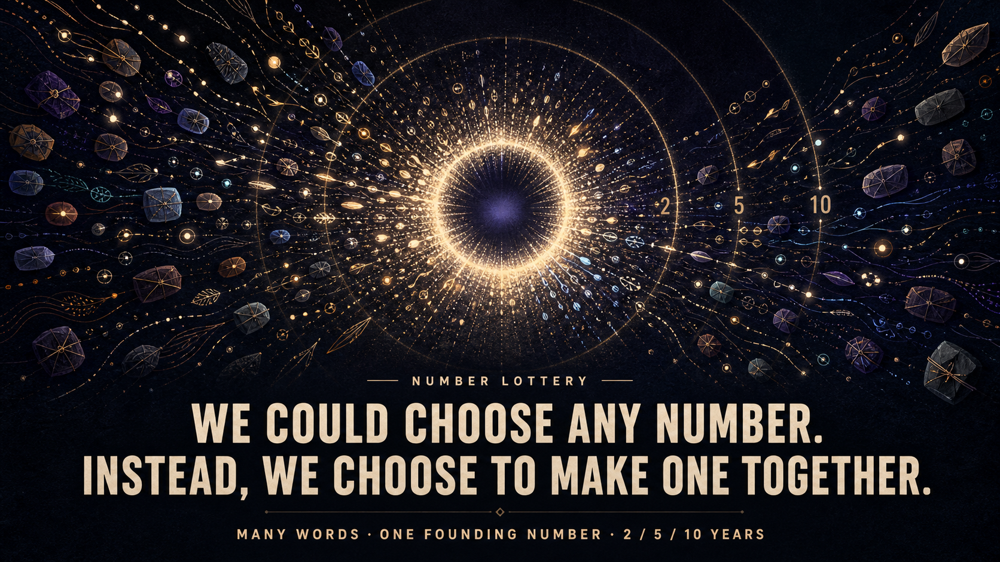

Pick the range
Before anyone sends a word, we agree whether the number will be in the millions, billions, trillions, or another range.
Early idea — not live yet
A time capsule for ResonantDAO
One word from each of us becomes one founding number—and a memory the community returns to in 2, 5, and 10 years.

The number is revealed once. The capsule continues.
Everyone gets one word. We lock the capsule before anyone knows the result. Then the words help create the number of tokens ResonantDAO starts with.
Before anyone sends a word, we agree whether the number will be in the millions, billions, trillions, or another range.
Share it now, keep it sealed for later, or sit this one out. All three are okay.
When the deadline arrives, we lock the list. No one can add, remove, or change a word after that.
After the capsule is locked, we add one final public number that arrives later. Together, everything gives us the token supply.
Share your word now, save it for later, or do not add one. None of these choices makes you more or less part of the community.
Everyone can see your word now and when the capsule comes back.
Your word stays out of public view unless you choose to open it later. The secure version still needs to be designed and tested.
You can skip the word and still be fully part of the community. Nothing is taken away.
No word buys influence.
No silence becomes a penalty.
The number comes out at the start. The words come back later so we can see what changed—and what did not.
We put our old words beside what we think now and see how the community has changed.
We look at what stayed, what changed, what failed, and what we got wrong.
We open another layer and pass the capsule to the people who will care for it next.
The invitation
We are not collecting words yet. First, we want the community to help decide what belongs in the capsule, how a word can stay sealed, and how we care for it for ten years.
Read the full ideaThis is still an idea we are testing. We have not chosen the token supply, and we are not collecting words yet. Before this goes live, we need to show that no one can quietly steer the number, define what “sealed” really protects, and make sure the capsule can last ten years.